担仔麺を食べ比べて台湾の旅は終わります [旅行記]
台北に首都が移るまで台湾の首都であった台南は歴史の古い街です。
また食の都としても知られ「台南にグルメツアーに行く」のが
台湾の人たちのにとって人気のレジャーのひとつなんだとか。
今回台湾に行った主な目的はその「食の都台南で担仔麺（たんつーめん）を食べること」でした。
ここでちょっと担仔麺の説明を。
台湾には小吃＝シャオチーと言われる一品料理があります。（大陸のことはよく知りませんw)
大衆的な小さな店や屋台で提供されるような気軽に食べられる料理を指し
その種類はスィーツから丼もの汁物まで多岐に渡ります。
その小吃発祥の地が台南といわれ、台南小吃の代表的な料理が担仔麺なのです。
担仔は食材の名前ではなく天秤棒のこと。
天秤棒で食材一式を担いで売り歩いていたことから担仔麺と呼ばれるようになったそうです。
売り歩いていたのは漁村の人々。
台風で漁に出られないシーズンに苦しい家計を支えるための副業だったんですって。
そんな苦しく貧しいシーズンは小月と呼ばれることから
「度小月担仔麺」って呼ばれることもあるみたいです。
『度小月』を店名にした有名な担仔麺のお店もあるんですよ。
このお店は後々出てくるので覚えておいてくださいねー。
講釈はここまで。
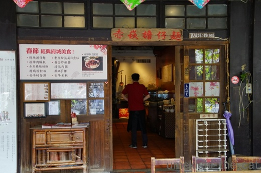
ランチに向かったのは赤崁擔仔麺というお店。
（擔＝担です。ちなみに赤崁とはオランダ統治時に建てられた古いお城のことです。
現在も市内に残っていて観光施設になってます。）
台南にある有名担仔麺屋さんのうちの一件。
専門店ではなくいろんなお料理があります。なんたって小吃の街ですから。
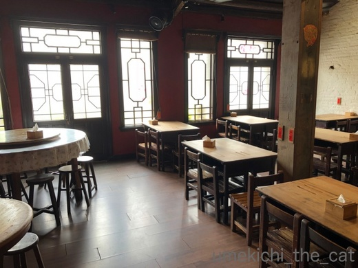
レトロな店内が素敵であります。二階もあって広いのです。

お料理が来るまで台湾ビールで喉を潤しますよ。
気温は30℃くらいで日差しもギラギラ暑かったのでビールが美味しいわぁ。
その土地の物はその土地で食べたり飲んだりするのが美味しいと思うので
ビールはずっと台湾ビールを飲んでました。
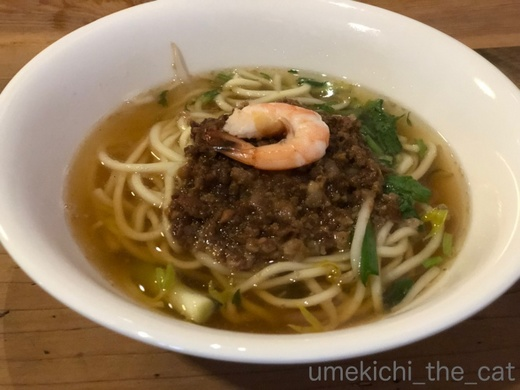
担仔麺キターっ！Ｏ（≧∇≦）Ｏ
小吃だけあって日本のラーメンの半分くらいのどんぶりサイズです。
お肉は豚挽肉。私が大阪で食べた物にはセロリが入っていたのですが
本場のものにはパクチーが入っていました。
パクチーはあまり好きじゃないけどたくさん入ってないのでOK＾＾
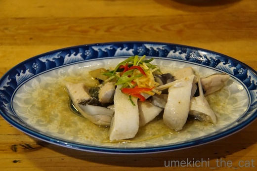
虱目魚（サバヒー）も台南名物。蒸し物を頼んでみました。
蒸したお魚に生姜・ニンニクで味付けしたごま油を熱してジャーっとかけてあります。
初めて食べましたが旨味のある白味魚で美味しかったですよ。
からあげなんかもおいしそう。

一番気に入ったのがこのお料理、黄金炸蝦捲＝エビロール揚げ。これも台南名物。
エビを粗くすり身にしてシュウマイの皮のようなもので包んで揚げてあります。
しっかり味がついているので付け合わせの甘辛すっぱソースはつけずに食べました。
なぜかチューブわさびも一緒に添えられてきたのでソースに混ぜ合わせて食べてみましたが
わさびの味を知っている日本人には「？？？」なお味でした (^▽^;)
食後は再び街を散策です。
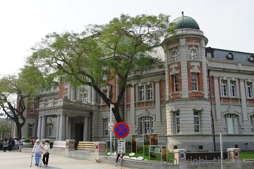
街中には日本統治時代の建物がたくさん残っています。
この建物は国立文化遺産保存センター、国立文学館、図書館が入っていたようでした。
米軍の空襲で被害を受けても取り壊さずに修復して使用してるんですね。

この建物は旧日本勧業銀行台南支店だったもの。
現在は台湾の銀行として使われています。
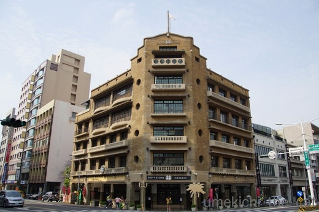
ひときわレトロな建物は日本統治下に日本人が創業した林百貨。
地元の方には日本語で「はやしデパート」で通じるw
戦後工場になったり役所になったりして近年創業時の姿に復元されたとか。
おしゃれな雑貨や台南のお土産を扱うファッショナブルな百貨店。
にゃんこお財布とパイナップルケーキはここで買いましたよー。

台鉄台南駅も統治下のもの。ムードある建物でした。

帰りは新幹線の駅までローカル線を使いました。
乗降客が多くて活気のある駅。みなさんもう夏の服装です。

夕方空港に到着して向かったのはここ！
そう、担仔麺の有名店度小月。（覚えてますかー？＾＾）
まだ、食べるんですよ。せっかくだもの担仔麺を食べ比べなければ。
（台南の本店は大行列で時間的にもお腹的にも入るのは無理でした）
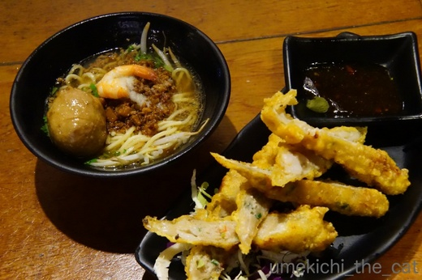
オーダーしたのはもちろん担仔麺と黄金炸蝦捲（←かなり気に入った＾＾）。
担仔麺は台南の赤崁擔仔麺で食べたものとあまり味の違いを感じませんでした。
どちらも遜色なく美味しい。
黄金炸蝦捲はこちらのお店の方が好みかな。
すり身具合がさらに粗くエビがプリプリしていました。
でもやっぱりチューブわさびが添えてありましたよwww
最後の最後まで食べて台湾旅行は終了です。
たくさん歩いて毎食後胃薬を飲んでいたので体調＆体重は変化なし！やったー！！
家に帰ると興奮した梅吉が走り回って迎えてくれました。
 ↑ガブッと一押し↑
↑ガブッと一押し↑
今回は時間がなくて行けなかった故宮博物院。
ちょと街外れにあるしじっくりみてたら時間がどんどん過ぎちゃうんですよねー。
ここに行く時にはまる１日時間を取っていきたいです。
展示物はどれもこれもため息が出ちゃうような素晴らしいものばかりなんですが
特に人気があるのが肉形石と翠玉白菜。
前回の旅行時に撮影しました。故宮博物院は全展示品写真撮影OKなのです！
これが一番有名な翠玉白菜。
鶏卵くらいの大きさでしょうか。
↑ ↑ ↑ ↑ ↑
これ、大間違いです。ちゃんと調べたら19㎝ほどありました。
大変失礼いたしましたm(_ _)m
ちびっこ白菜もいます＾＾
この肉・白菜の有名２点ですが、2015年以降は台湾国内同じ都市で展示されることはなくなりました。
台北から新幹線で1時間半程の嘉義市に故宮博物院南院がオープンしたのですが
肉と白菜は交代でそれぞれの博物館に展示されることになったのです。
両方見たかったら本院、南院両方来てね♡ あるいは
展示時期を確認して台湾に二回来てね♡ ということなんです(^▽^;)
うーん、台湾の集客作戦なかなかですw
いつかは肉、見てみたいなー。
また食の都としても知られ「台南にグルメツアーに行く」のが
台湾の人たちのにとって人気のレジャーのひとつなんだとか。
今回台湾に行った主な目的はその「食の都台南で担仔麺（たんつーめん）を食べること」でした。
ここでちょっと担仔麺の説明を。
台湾には小吃＝シャオチーと言われる一品料理があります。（大陸のことはよく知りませんw)
大衆的な小さな店や屋台で提供されるような気軽に食べられる料理を指し
その種類はスィーツから丼もの汁物まで多岐に渡ります。
その小吃発祥の地が台南といわれ、台南小吃の代表的な料理が担仔麺なのです。
担仔は食材の名前ではなく天秤棒のこと。
天秤棒で食材一式を担いで売り歩いていたことから担仔麺と呼ばれるようになったそうです。
売り歩いていたのは漁村の人々。
台風で漁に出られないシーズンに苦しい家計を支えるための副業だったんですって。
そんな苦しく貧しいシーズンは小月と呼ばれることから
「度小月担仔麺」って呼ばれることもあるみたいです。
『度小月』を店名にした有名な担仔麺のお店もあるんですよ。
このお店は後々出てくるので覚えておいてくださいねー。
講釈はここまで。
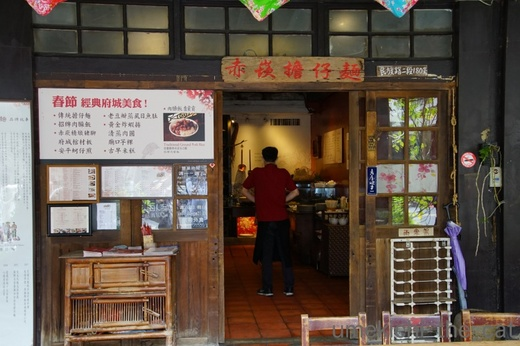
ランチに向かったのは赤崁擔仔麺というお店。
（擔＝担です。ちなみに赤崁とはオランダ統治時に建てられた古いお城のことです。
現在も市内に残っていて観光施設になってます。）
台南にある有名担仔麺屋さんのうちの一件。
専門店ではなくいろんなお料理があります。なんたって小吃の街ですから。
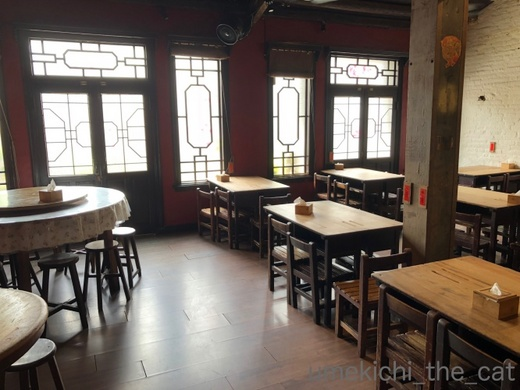
レトロな店内が素敵であります。二階もあって広いのです。

お料理が来るまで台湾ビールで喉を潤しますよ。
気温は30℃くらいで日差しもギラギラ暑かったのでビールが美味しいわぁ。
その土地の物はその土地で食べたり飲んだりするのが美味しいと思うので
ビールはずっと台湾ビールを飲んでました。
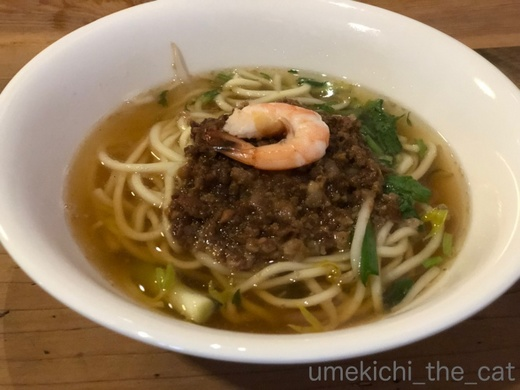
担仔麺キターっ！Ｏ（≧∇≦）Ｏ
小吃だけあって日本のラーメンの半分くらいのどんぶりサイズです。
お肉は豚挽肉。私が大阪で食べた物にはセロリが入っていたのですが
本場のものにはパクチーが入っていました。
パクチーはあまり好きじゃないけどたくさん入ってないのでOK＾＾
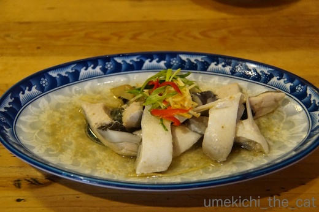
虱目魚（サバヒー）も台南名物。蒸し物を頼んでみました。
蒸したお魚に生姜・ニンニクで味付けしたごま油を熱してジャーっとかけてあります。
初めて食べましたが旨味のある白味魚で美味しかったですよ。
からあげなんかもおいしそう。

一番気に入ったのがこのお料理、黄金炸蝦捲＝エビロール揚げ。これも台南名物。
エビを粗くすり身にしてシュウマイの皮のようなもので包んで揚げてあります。
しっかり味がついているので付け合わせの甘辛すっぱソースはつけずに食べました。
なぜかチューブわさびも一緒に添えられてきたのでソースに混ぜ合わせて食べてみましたが
わさびの味を知っている日本人には「？？？」なお味でした (^▽^;)
食後は再び街を散策です。
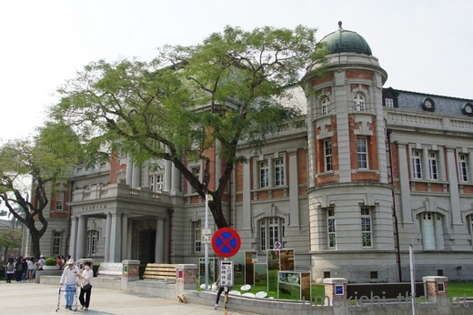
街中には日本統治時代の建物がたくさん残っています。
この建物は国立文化遺産保存センター、国立文学館、図書館が入っていたようでした。
米軍の空襲で被害を受けても取り壊さずに修復して使用してるんですね。

この建物は旧日本勧業銀行台南支店だったもの。
現在は台湾の銀行として使われています。
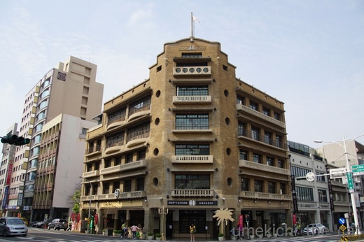
ひときわレトロな建物は日本統治下に日本人が創業した林百貨。
地元の方には日本語で「はやしデパート」で通じるw
戦後工場になったり役所になったりして近年創業時の姿に復元されたとか。
おしゃれな雑貨や台南のお土産を扱うファッショナブルな百貨店。
にゃんこお財布とパイナップルケーキはここで買いましたよー。

台鉄台南駅も統治下のもの。ムードある建物でした。

帰りは新幹線の駅までローカル線を使いました。
乗降客が多くて活気のある駅。みなさんもう夏の服装です。

夕方空港に到着して向かったのはここ！
そう、担仔麺の有名店度小月。（覚えてますかー？＾＾）
まだ、食べるんですよ。せっかくだもの担仔麺を食べ比べなければ。
（台南の本店は大行列で時間的にもお腹的にも入るのは無理でした）
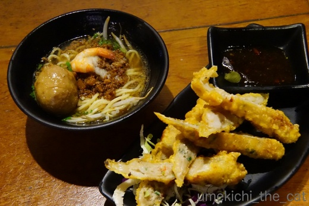
オーダーしたのはもちろん担仔麺と黄金炸蝦捲（←かなり気に入った＾＾）。
担仔麺は台南の赤崁擔仔麺で食べたものとあまり味の違いを感じませんでした。
どちらも遜色なく美味しい。
黄金炸蝦捲はこちらのお店の方が好みかな。
すり身具合がさらに粗くエビがプリプリしていました。
でもやっぱりチューブわさびが添えてありましたよwww
最後の最後まで食べて台湾旅行は終了です。
たくさん歩いて毎食後胃薬を飲んでいたので体調＆体重は変化なし！やったー！！
家に帰ると興奮した梅吉が走り回って迎えてくれました。
今回は時間がなくて行けなかった故宮博物院。
ちょと街外れにあるしじっくりみてたら時間がどんどん過ぎちゃうんですよねー。
ここに行く時にはまる１日時間を取っていきたいです。
展示物はどれもこれもため息が出ちゃうような素晴らしいものばかりなんですが
特に人気があるのが肉形石と翠玉白菜。
前回の旅行時に撮影しました。故宮博物院は全展示品写真撮影OKなのです！
これが一番有名な翠玉白菜。
↑ ↑ ↑ ↑ ↑
これ、大間違いです。ちゃんと調べたら19㎝ほどありました。
大変失礼いたしましたm(_ _)m
ちびっこ白菜もいます＾＾
この肉・白菜の有名２点ですが、2015年以降は台湾国内同じ都市で展示されることはなくなりました。
台北から新幹線で1時間半程の嘉義市に故宮博物院南院がオープンしたのですが
肉と白菜は交代でそれぞれの博物館に展示されることになったのです。
両方見たかったら本院、南院両方来てね♡ あるいは
展示時期を確認して台湾に二回来てね♡ ということなんです(^▽^;)
うーん、台湾の集客作戦なかなかですw
いつかは肉、見てみたいなー。

カフェオレ色の梅吉

梅吉 2023年8月10日 永眠


梅吉と出会った譲渡会

犬猫の理由なき殺処分ゼロ
妄想広告
UMEKICHI 光

爆発的に早い！
時々攻撃的！
Thanks to Mr.Boss365
爆発的に早い！
時々攻撃的！
Thanks to Mr.Boss365

どれも美味しそう(^O^)
ジャスミンティーとかウーロン茶も合いそうですねぇ＾＾
台湾、これは食い道楽が出来る素敵な街ですね(^_^)v
「翠玉白菜」かみさんが上野の博物館に来たときに
観たそうですが、その頃から故宮博物館に行きたいって叫んでたなぁ^^;
by ニッキー (2018-03-22 12:58)
「肉」と「白菜」、故宮で一緒に見ました！
行ったのがずいぶん前だったのがよくわかりますね^^
担仔麺、麺はしっかり太めですね！
パクチーよりセロリがいいな・・・なら大阪で食べなさい、ということですね(^▽^;)
黄金炸蝦捲はビールに合いそう♪
私も海外の旅先では日本のビールは飲みませ～ん(*^▽^*)
by ゆきち (2018-03-22 13:40)
肉形石が博物館に来たときは人気過ぎて見れませんでした。
グルメ散歩したいなぁ。
by 響 (2018-03-22 14:11)
本場のものにはパクチーなのですね。
うふふ。わたしならてんこ盛りでも大丈夫！(笑)
あああ、それにしても担仔麺の写真は、ラーメン欠乏症になりかけている私を悶えさせるのにじゅうぶんですよ！(笑)
黄金炸蝦捲、これも美味しそうだなー。エビ女としては、是非とも食してみたいです。チューブわさびにはチョット笑っちゃいましたが^m^
体重変化無しおめでとう！
故宮博物院は本当にじっくり見ていたら一日でも足りないって感じですよね。またの機会ですね♪♪
by リュカ (2018-03-22 15:35)
レトロな建物にいろんな小吃。ぶらぶら町歩きするのにぴったりな街ですね~。お腹空いてる時間に見るには目の毒なくらい美味しそうなグルメブログです。あれーー!? 梅吉さんは??
by zombiekong (2018-03-22 17:38)
担仔麺は食べた事がないです！
台湾行くと牛肉麺ばっかしです(^^)
by ma2ma2 (2018-03-22 19:25)
ううむ、ぜひ台湾に行ってみたいと思いました。
担仔麺、美味しそう。
とりあえず、わが地方でも食べさせてくれる台湾の店がないか
探して見ようと思います。^^)
by yes_hama (2018-03-22 21:31)
旅先でその土地の食べ物を食べるのが、一番美味しいですね。
それが旅の醍醐味だと思います。
麺類が好きなのは、日本人だけじゃないんですね(^^)
by riverwalk (2018-03-22 21:56)
きゃ～(≧▽≦)どれもこれもすっごく美味しそう～＾＾
いいな～♪
私は、台南はさら～っと通り過ぎてしまったので
今度は、じっくりと食べ歩きしたいな～( ´∀｀ )
by マーヤ (2018-03-23 00:49)
有名な白菜がそんなに小さかったとは！＾＾；
by ぽちの輔 (2018-03-23 06:26)
担仔麺、美味しそうですね。
パクチー普通くらいなら好きです。
セロリも好きです（笑）
黄金炸蝦捲はいつか真似てみたいと思いました。
すでに30度なのですね。
故宮博物館の特別展が40年近く前に福岡で開催された時に観に行きました。
そこで、北海道旅行優待にあたり、北海道に行ったのが初めての北海道でした。
広大な北海道で、1日中観光バスに揺られていたのを思い出します。
津軽海峡が地図では近いのに、
飛行機の中から見るととても広いのに驚いたことを思い出しました。
by kiki (2018-03-23 14:11)
たんつーめん、おいしそう！
この国ではまだ、パクチーましまし、オプションはないんですかね（笑）
都内でも食べられないかなーと探してみたら、なんとレシピが^^;
白菜、等身大くらいを想像してました・・・
by Ja-Kou66 (2018-03-24 00:35)
台湾、グルメの国ですにゃ♪ 黄金のエビ巻き、おいしそう〜♡
白菜も、肉石も、TVで見たことある・ある(^.^)
ほんとーに、豚バラ肉の塊みたいですよねっ
by のらん (2018-03-24 11:08)
ニッキーさん＞
台湾は本当に食べ歩きにはぴったりなところです＾＾
治安も日本とさほど変わりないので
安心して歩けるところもポイントが高いですよー。
故宮博物院は必見だと思います。
ぜひぜひニッキーさんもご一緒に＾＾
ゆきちさん＞
わぁ〜「肉」と「白菜」を同時にご覧になったとは羨ましい！
交代で展示する作戦に出たって事はそれだけ集客力の望める物なのでしょうね。
それに目をつけたのか故宮付属のレストランでは
「肉」「白菜」の再現メニューを出してますw
私が通っていた大阪で担仔麺が食べられるお店は
残念ながら昨年閉店してしまいましたー(꒦ິ⌑꒦ີ)
なんばこめじるしにあった「味仙」（名古屋の味仙とは無関係です）
というお店だったのですが。。残念です。。。。。
（心斎橋にも店舗があったようですがそちらも閉店）
響さん＞九州の国立博物館に来ていましたね！肉形石！！
東京の後、関西を素通りされて悲しかったですー。
台湾にもレンタルバイクあったかな・・・・・
でもそうするとビールが飲めませんね＾＾
リュカさん＞
あら、今はラーメン断ちをされているのかしら・・・・
あ！コンラッド、クルーズの後の節制でしょうか＾＾
東京には台湾料理の店って割とあるようですよ（ネット情報）
もしかしたら黄金炸蝦捲を出しているお店もあるかもー！！
大阪は台湾料理の店があまりなくって残念です。
あるのかもしれないけどディープすぎて探せないのかなぁ。
zombiekongさん＞
そうなのー！梅吉の写真を載せるのすっかり忘れてしまって・・・・
梅吉ブログなのに！！
なので、取り急ぎ（？）今日は通常記事をアップしました(^_－)☆
ma2ma2さん＞
牛肉麺も美味しいですよねー。
がっつり食べたい時は（肉、多いですよね・・・）牛肉麺、
あっさり食べたい時は担仔麺でしょうか＾＾
yes_hamaさん＞
台湾料理の店あると良いですねー＾＾
四川や広東料理の店はたくさんあるのですが
台湾料理の店って意外と無いものなのですよ・・・
食べログなどで情報を集めていて台湾料理って書いてあっても
コメントを読むと普通のラーメン屋さんだったりとか(^▽^;)
日本で食べられないものが多いので余計に禁断症状が出ちゃいますw
riverwalkさん＞
台湾の方は麺類大好きですよ＾＾もしかしたら日本人以上かも・・・
私はまだ食べていないのですがソーメンや
うどんみたいな麺もあるようです。
そのあたりもぜひぜひ食べて見たいです！！
マーヤさん＞
我が家はすっかり台南が気に入ってしまいました＾＾
また台湾に行けたらその時は台南をベースにしようか、
などど話しているくらいです。
街がちょっとのんびりしている感じが良いんですよねー！
マーヤさんの台湾旅行記も読みたいな♡
ぽちの輔さん＞わー！ごめんなさい！！翠玉白菜！！！
おっとに「そんなに小さかたっけ？」と言われてちゃんと調べたら
19㎝くらいあるそうです！
調べずに記事にして申し訳ありませんでしたm(_ _)m
記事は訂正しておきましたー。
by ちぃ (2018-03-24 21:26)
kikiさん＞
中華系の料理は材料でなんとなく味の想像がつくのが良いですよね＾＾
黄金炸蝦捲、実際に食べた私としても真似てみたいのですが
梅吉を制しながら揚げ物をするのが気が重いです・・・(^▽^;)
特別展を見に行って北海道旅行がついて来た！？
それはなんと素晴らしい！！
かつて札幌の中学生は青森に修学旅行に行くのが定番でした。
青函トンネルもない時代だったので津軽海峡を渡るのは青函連絡船。
船酔いしながら津軽海峡の広さを体感したものですが
私が高校生になると修学旅行も飛行機の時代に。
そうやって土地勘・距離感が失われて行くのかな・・・とも思いましたよ。
Ja-Kou66さん＞
ましまし、そのうち日本人対応オプションメニューとして
登場するかもしれませんねー＾＾
今はこんなものまで！と思うようなレシピも
ネットで探すとちゃんと出て来ますよね。
いつでも作れるじゃない・・・も結構プレッシャーです (^▽^;)
白菜はちゃんと調べたら19㎝ですって・・・ｺﾞﾒﾝﾅｻｲ
私の記憶ってwww
のらんさん＞そうなんです！グルメ大国！！
大陸は衛生的になんだかな・・・って感じもしますが
台湾は保健局も厳しいので安心です＾＾
白菜・肉、故宮の博物館付属のレストランでは
再現メニューもあるんですよー。
by ちぃ (2018-03-25 11:16)